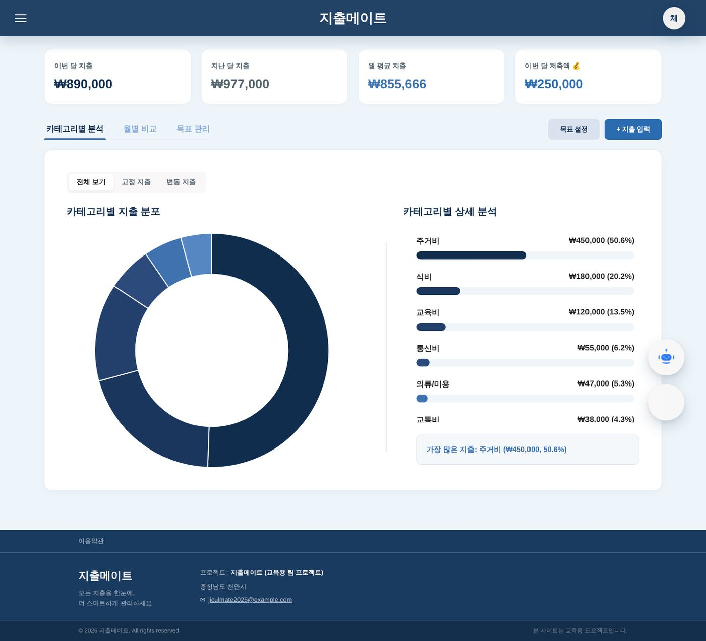

이은아
이은아


01
지출메이트
지출과 구독 서비스를 한곳에서 관리하는 웹서비스
 #Java 21
#Java 21 #Spring Boot 4.0.5
#Spring Boot 4.0.5 #Spring Security#JSP
#Spring Security#JSP #JavaScript
#JavaScript #Oracle
#Oracle #Docker
#Docker #IntelliJ IDEA#Gradle
#IntelliJ IDEA#Gradle #Git
#Git
메인부터 약관 동의·회원가입, 비밀번호 찾기, 로그인, 메뉴의 화면들, 관리자 로그인까지 눌러 본 녹화입니다. 녹화하려고 넣은 시연 데이터를 썼고, DB는 팀에서 쓴 Oracle 대신 Oracle 호환 모드의 MariaDB에서 돌렸습니다. 위 영상은 주요 장면만 모은 요약본이고, 전체 녹화(6분 1초)는 자세히 보기에 있습니다.
배경과 문제

마감 직전, 개발 담당이었던 조장과 PM인 제 계정에서는 저장되던 지출·저축·목표가 다른 팀원 계정의 대시보드에는 나오지 않았습니다. 다른 팀원이 만든 기능이었습니다.
역할과 기여
- 회원가입·로그인 모달, 약관 동의, 비밀번호 재설정
- 커뮤니티 (글·댓글·첨부파일, 나이대별 제한)
- 관리자 화면 UI
- WBS 관리와 최종 발표
- 팀원 기능·DB 연동 최종 검토, 오류 위치 찾기 (대시보드, 마이페이지)
기술적 의사결정
- AI 답을 바로 붙이지 않음첫 답의 수정 코드는 두고 필요한 파일부터 보내 원인을 확정
- 다른 계정으로 재현콘솔의 userId is not defined 오류를 그대로 붙여 다시 질문
- 세션 기준으로 수정컨트롤러 2개가 로그인 세션의 사용자로 저장하게 고침
성과와 배운 점
- 3곳dashboard.js의 userId: 1 하드코딩을 찾아 원인 확정
- 2개세션 기준으로 바꾼 컨트롤러 (지출·목표)
- 1일팀원 오류 수정 반영
AI가 준 코드보다 기존 코드 구조를 먼저 보여 주고, 원인이 확정되면 그때 고칩니다.